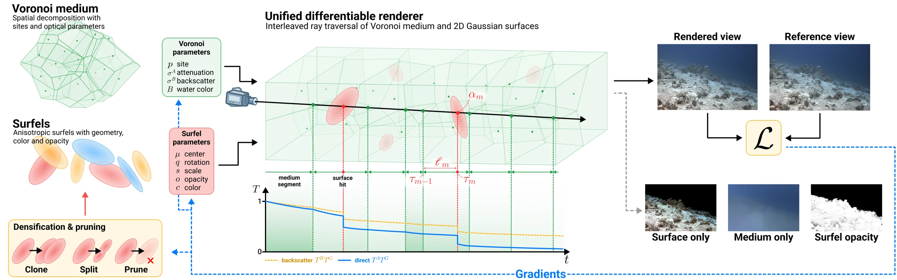

Gaussian surfels
Oriented, planar Gaussians model the seabed, rocks, and other surfaces, with view-dependent appearance.
Surfaces + scattering media
A Voronoi-Surfel Representation
for Differentiable Rendering
One scene. Two representations.
Surfaces and the medium, reconstructed together.
Reimagined independently.
Underwater, light travels through the scene before it reaches the camera. Water attenuates the surface and scatters light back toward us. Reconstructing only what is solid tells just part of the story.
FoamSurf gives the surface and the medium their own representations. Planar Gaussian surfels capture the geometry and appearance of surfaces. Space-filling Voronoi cells describe the water or fog between them. A single differentiable ray tracer brings both together.
A reconstructed underwater scene, with objects, lights and reflections added directly into the learned water.
Explicit geometry. Spatially varying water.
One ordered path for light.

Oriented, planar Gaussians model the seabed, rocks, and other surfaces, with view-dependent appearance.
Space-filling cells carry local attenuation, backscatter, and medium color, allowing water and fog to vary throughout the scene.
Surface hits and medium segments are composited in order along each ray. Training priors separate the components without segmentation masks.
Inspect the reconstruction as a whole, or reveal its surface and medium independently.
Mean over four scenes and three seeds. Separation: surface opacity on the seabed and transparency over open water.
| Method | PSNR↑ | SSIM↑ | LPIPS↓ | FPS↑ | Train (min)↓ | Separation↑ |
|---|---|---|---|---|---|---|
| SeaThru-NeRF (JAX) | 27.11 | .845 | .341 | 0.10 | 614 | .762 |
| SeaThru-NeRF (Nerfstudio) | 28.31 | .914 | .188 | 0.06 | 722 | .851 |
| Zip-NeRF | 29.62 | .923 | .173 | 0.13 | 160 | n/a |
| 3DGS | 25.91 | .872 | .217 | 346 | 13.2 | n/a |
| RadFoam | 23.52 | .810 | .359 | 33 | n/a | n/a |
| SeaSplat | 27.22 | .883 | .191 | 115 | 49.4 | .545 |
| WaterSplatting | 29.62 | .928 | .190 | 154 | 8.9 | .624 |
| WaterSplatting + PPISP | 30.71 | .930 | .185 | 164 | 7.4 | .616 |
| Plenodium | 30.68 | .931 | .185 | 211 | 8.7 | .505 |
| FoamSurf (ours) | 30.75 | .929 | .202 | 120 | 28.7 | .901 |
Edit the geometry. Change the water.
Introduce something new.
Deform the seabed while keeping the reconstructed medium in place.
Adjust the water’s appearance, attenuation, and scattering independently of the surface.
Insert objects into the reconstruction, with attenuation and scattering along direct, reflected, and refracted rays.
Stylize the surface and the water separately, then bring them together in a single scene.
Scenes inside a scattering medium contain solid surfaces, such as the seabed or rocks, and a semi-transparent medium, such as water, fog, or smoke. Recent Gaussian-based methods produce realistic images of scenes in scattering media, but traces of the medium can remain visible in surface-only renders. Neural fields separate surfaces and medium more accurately, but they are slow to train and difficult to edit.
FoamSurf models surfaces with planar Gaussian surfels and the medium with space-filling Voronoi cells. A single differentiable ray tracer composites both along arbitrary rays, while training priors keep them separate without segmentation masks. Across real underwater scenes, synthetic scenes, and dense fog, FoamSurf achieves image quality on par with the state of the art and the most accurate surface–medium separation among the compared methods in our experiments.
The recovered components can be removed, edited, or stylized independently. The same reconstruction supports inserted mesh objects with attenuation and scattering along both direct and reflected or refracted rays.
The code and the video are out. The preprint is on its way; its link will appear here.